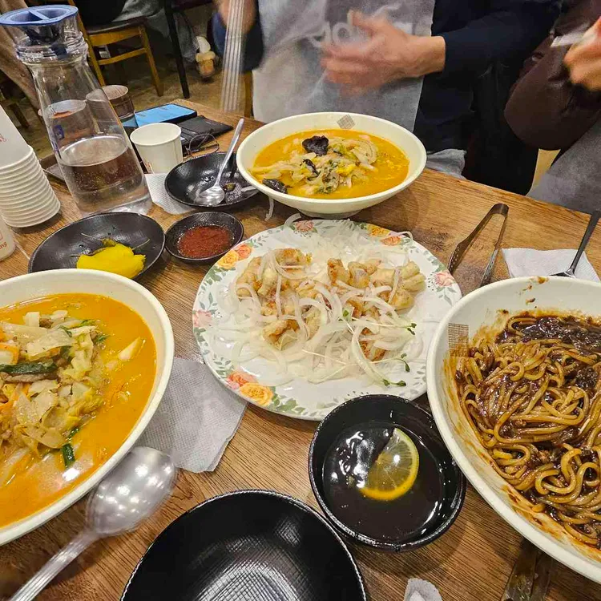
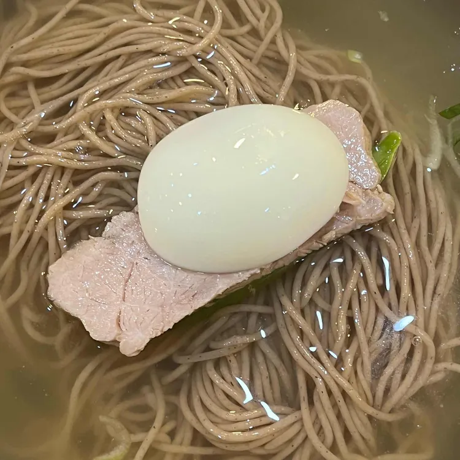
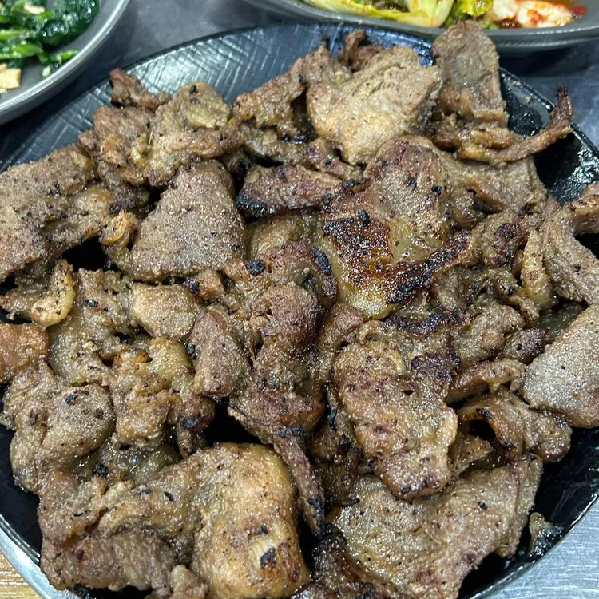
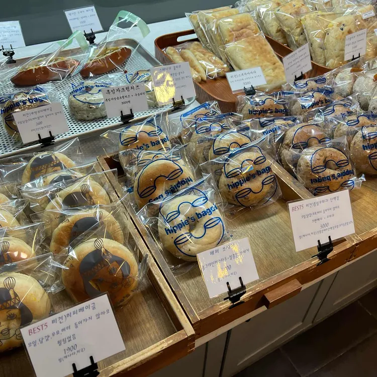
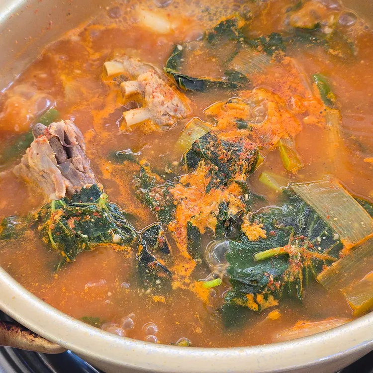
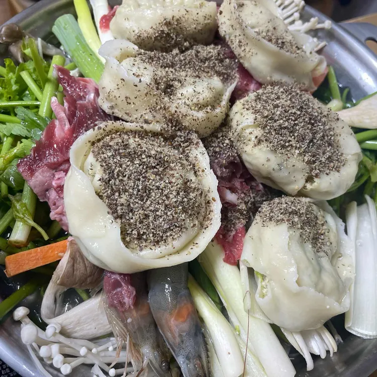

맛집 목록
| 사진 | 이름 | 분류 | 주소 | 바로가기 |
|---|---|---|---|---|
|  | 미성반점 | 중식 | 서울 도봉구 삼양로144길 26 | 상세보기 |
|  | 춘천막국수 | 막국수 | 서울특별시 강북구 삼양로141길 4-4 | 상세보기 |
|  | 궁전회관 | 기사식당 | 서울특별시 강북구 한천로 1159 1층 | 상세보기 |
|  | 히피스베이글 | 빵 | 서울특별시 강북구 삼양로 528 1층 | 상세보기 |
|  | 마포감자국 | 감자탕 | 서울특별시 강북구 한천로 1158 1층 | 상세보기 |
|  | 예와 손만두 | 만두 | 서울특별시 강북구 4.19로 40-8 | 상세보기 |